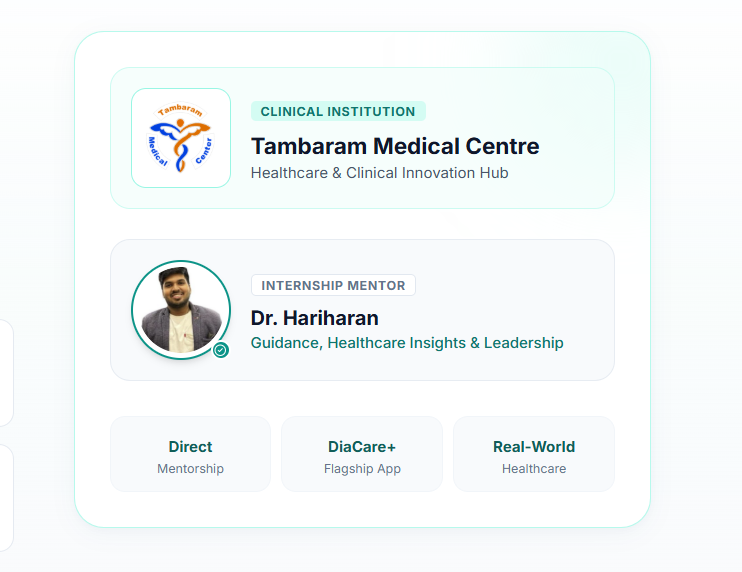

Tambaram Medical Centre
AI & Data Science Intern
Exploring the intersection of healthcare, artificial intelligence, data science, and application development through practical clinical software solutions.

About My Experience
Direct engagement bridging healthcare requirements with modern software and data science.
My internship at Tambaram Medical Centre provided an opportunity to apply software development and AI & Data Science concepts to healthcare-related challenges. During this experience, I worked on developing multiple applications intended to support healthcare processes and digital health management.
One of the important areas of focus was diabetes management, where application-based solutions were explored to support the recording and monitoring of diabetes-related health information.
This experience helped me understand how technology can contribute to healthcare digitalisation and how software applications can address practical needs in a healthcare environment.
Healthcare Applications & Development Work
Featured mobile and health tracking platform engineered during the clinical engagement.
DiaCare+
Digital Diabetes Management & Health Monitoring Platform
A digital diabetes management application designed to support the recording and monitoring of diabetes-related health parameters, transforming manual paper logs into actionable digital biometric telemetry.
Fasting Blood Glucose Recording
Systematic daily logging of baseline morning fasting plasma glucose levels with timestamped trend historical logs.
Post-Prandial Blood Glucose Recording
Precise mealtime interval tracking capturing 2-hour post-meal glucose spikes for comprehensive glycemic variance.
HbA1c-Related Information
Estimated average glucose correlation and 90-day glycated hemoglobin progress indicators.
Health Data Visualization
Interactive graphical visualization of glycemic variability curves, time-in-range metrics, and high/low alert zones.
Structured Health Information Management
Centralized, exportable health records organized for seamless physician and nutritionist consultation reviews.
Application Architecture & Technologies:
Skills & Professional Learning
Key competencies honed across practical clinical engineering and health data science.
Healthcare Application Development
Developing human-centric digital interfaces and workflow modules for healthcare processes.
Artificial Intelligence
Exploring algorithmic intelligence and predictive patterns for patient health indicators.
Data Science
Structured analysis of longitudinal biometric data, glucose metrics, and clinical readings.
Health Data Management
Ensuring confidential, structured recording and fast retrieval of clinical parameters.
Software Development
Architecting robust, cross-platform mobile and web application architectures.
Problem Solving
Translating real-world clinical hurdles into intuitive technological solutions.
Understanding Healthcare Workflows
Direct exposure to medical practice rhythms, patient consultations, and clinical care needs.
A Special Note of Gratitude
Heartfelt acknowledgement of mentorship, leadership, and clinical guidance.
Dr. Hariharan
Tambaram Medical Centre • Physician, Healthcare Visionary & Student Mentor
“I would like to express my heartfelt gratitude to Dr. Hariharan for his exceptional support, constant encouragement, and invaluable guidance throughout my internship at Tambaram Medical Centre.
His willingness to provide opportunities, encourage new ideas, and guide us through practical experiences made this journey truly meaningful. He gave us the opportunity to explore our capabilities, take initiative, work on real-world healthcare applications, and understand how technology can make a difference in the healthcare sector.
What made this experience especially valuable was his continuous encouragement to learn, improve, think independently, and approach challenges with confidence. His guidance went beyond technical knowledge — he inspired us to explore new possibilities, take responsibility, and grow both professionally and personally.
I sincerely appreciate the trust he placed in us, the opportunities he created for us, and the time he dedicated to guiding and supporting our development.
Thank you, Dr. Hariharan, for making this internship a valuable learning experience and for being an important part of our professional journey.”
With Appreciation • Acknowledgement
“I would also like to sincerely thank Dr. Ashwin Karuppan for his valuable guidance, encouragement, and support throughout this learning journey.”